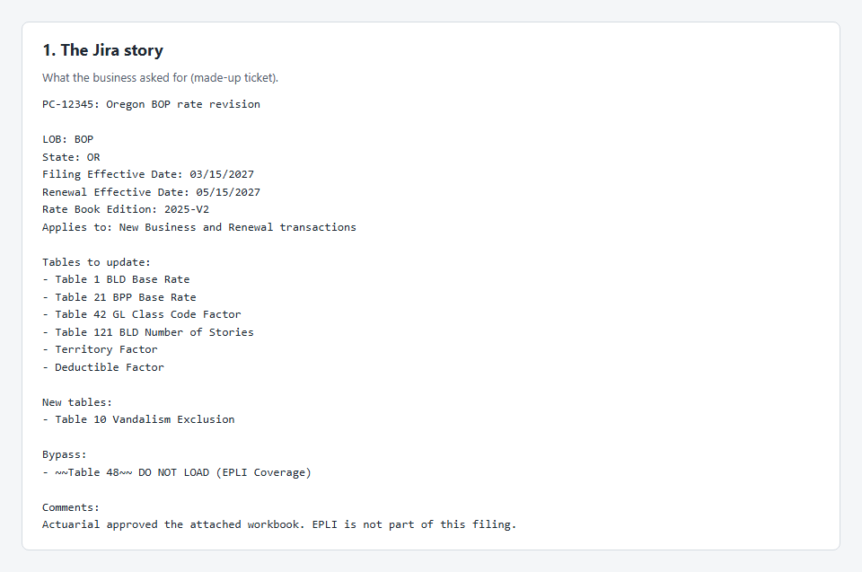
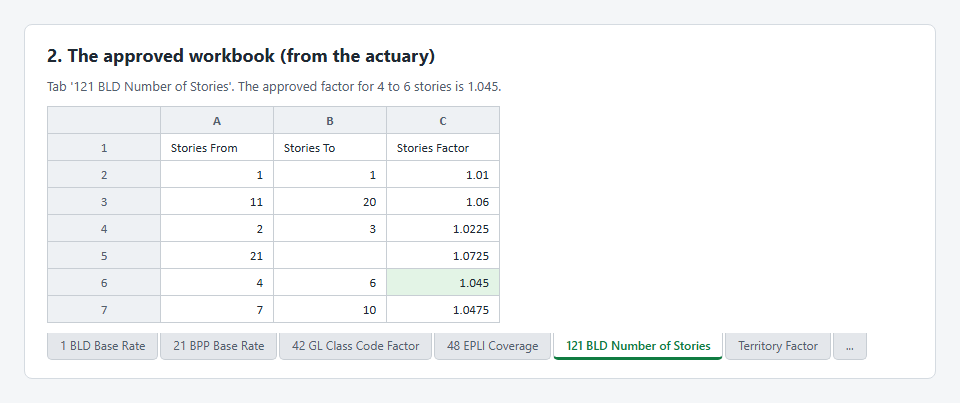
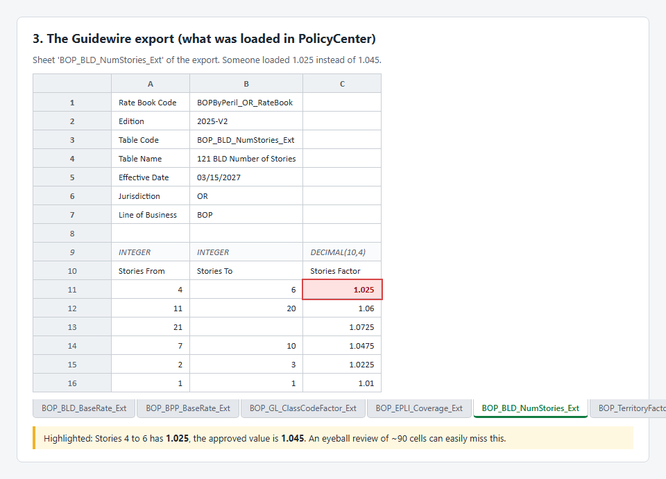
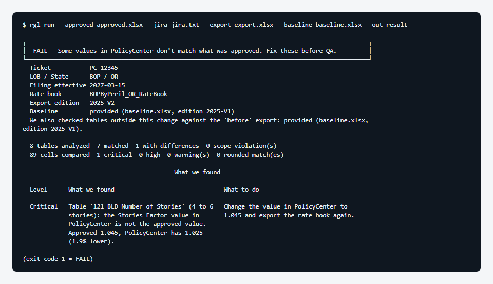
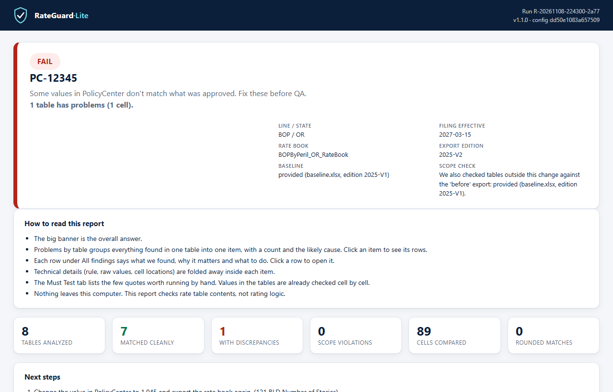
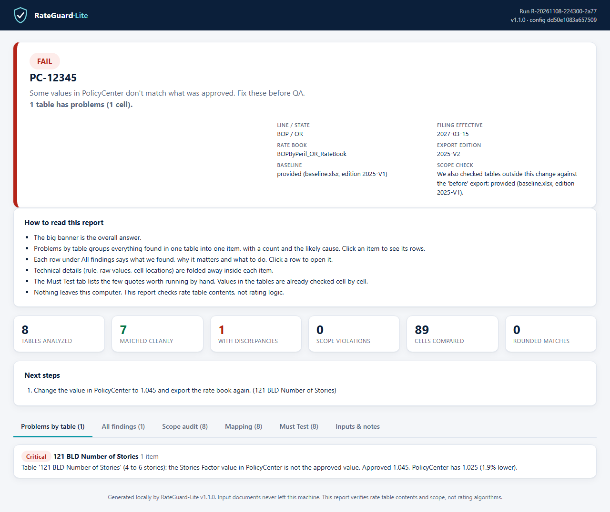
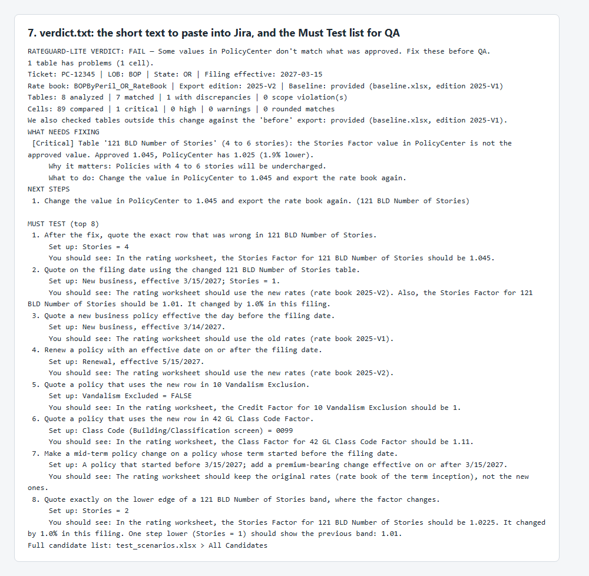

RateGuard·Lite: a 60-second demonstration
Did every approved rate land correctly in Guidewire? Here, one factor was loaded wrong. The tool finds it in seconds and tells QA exactly what to fix and what to test.
All data below is synthetic (generated by rgl sample); nothing is real carrier data. Regenerate with python scripts/make_demo.py.
1. The input: a Jira story
An Oregon BOP rate revision: six tables to update, one new table, one table marked DO NOT LOAD.

2. The approved workbook
The actuary's workbook has one tab per table. For 121 BLD Number of Stories, buildings with 4 to 6 stories get a factor of 1.045.

3. The Guidewire export: the mistake
After the change was loaded in PolicyCenter, the rate book was exported. In that table the 4 to 6 stories row holds 1.025 instead of 1.045, a 1.9% undercharge on every policy with a 4 to 6 story building. It is one cell among 89 (and on a real rate book, among tens of thousands).

4. Run the tool
One command, a few seconds, on the laptop, no internet. The verdict is FAIL and it names the table, the row, the approved value and the loaded value.

5. The report
The HTML report opens on Problems by table: one item per table, with a count and a likely cause. The other tabs list every finding, every table, and the QA test script.

reconciliation_report.html. Open the real generated report.
6. What goes back to Jira and to QA
verdict.txt (and jira_comment.txt) is a short plain-words summary to paste into the ticket: what needs fixing, why it matters, what to do, and a short ranked Must Test list so QA tests exactly the rows that changed instead of everything.

What this shows
- It checks every approved cell against Guidewire, not a sample.
- The answer is plain: table, row, approved value, loaded value, difference, what to do.
- It runs offline; files never leave the laptop.
- It also catches missing or extra rows, shifted bands, blanks loaded as wildcards, undeclared changes, wrong dates and editions (see FINDING_CATALOG.md).
- It checks tables, not rating logic or premiums, and it helps QA rather than replacing it.
Try it yourself: INSTALL.md, then rgl sample --out demo. On real files: FIRST_REAL_RUN.md.